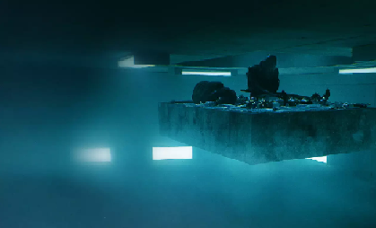

 Informações sobre o Filme: Tempo de Duração: 94 Minutos País: Espanha Idioma: Espanhol Lançamento: 06 de Setembro de 2019 Gênero: Ficção Científica, Suspense e Terror Classificação: 16+ Estreia no Brasil: 18 de Março de 2020 Título Original: El Hoyo Direção: Galder Gaztelu-Urrutia
Resenha Crítica
A desigualdade social e o consumismo são assuntos bastante presentes no cotidiano, gerando uma série de injustiças e dificuldades para milhares de pessoas. É um abismo econômico que existe no mundo todo e cresce a cada dia, pois, como retrata no filme, quem tem mais, quer sempre mais. O personagem principal, Goreng, entra no sistema voluntariamente, com intuito de se livrar de um vício: o cigarro. Ele permaneceria ali por seis meses e ao sair, ganharia um certificado homologado. Ao entrar, ele vai diretamente para o nível quarenta e oito com um colega de cela, o Trimagasi, e se assusta com o sistema com o qual se depara. Há uma plataforma que passa por todos os níveis existentes no Poço com a refeição, porém a divisão da comida é feita por cada prisioneiro e ao chegar a níveis mais inferiores, como o cem, não há mais comida alguma. A princípio, ao se deparar com a situação, Goreng tenta fazê-los entender que a racionalização da comida faria com que todos comessem, no entanto, as pessoas não aceitam isso e esse sistema continua de forma que, quem está nos primeiros níveis consegue comer e aqueles que estão nos mais inferiores passam fome, fazendo com que alguns se suicidem ou matem seus companheiros de cela para comê-los. As mudanças de nível acontecem a cada mês e, ao findar o primeiro mês de Goreng, ele adormece. Ao acordar, se depara no nível cento e setenta e dois amordaçado e amarrado pelo seu companheiro, que por estar ali há mais tempo, já sabia que isso aconteceria e se adiantou em ter Goreng como alvo ao invés de ser o alvo, por ser mais velho. Os dias passaram e quando Trimagasi ia cortar Goreng para comê-lo, Miharu, a mulher que descia na plataforma todo mês atrás de seu filho perdido, mata Trimagasi e ajuda Goreng, retribuindo o favor. Goreng permanece na mudança de nível com o passar dos meses e em um deles. Ao acordar, se depara com Imoguiri - a mulher que trabalhava na administração enviando as pessoas para o Poço - essa mulher tenta convencer as pessoas sobre a solidariedade espontânea, para que todos comessem somente o necessário e, dessa forma, ninguém passaria fome. Entretanto, essa mulher morre e Goreng, ao se deparar com um novo companheiro, o Baharat, decide junto com ele descer em todas as plataformas impedindo que as pessoas comam a mais do que deveriam. No final do filme, ao passar por vários obstáculos descendo pela plataforma, Goreng descobre que havia trezentos e trinta e três níveis e, no último, percebe que existia realmente uma criança e que ela era a mensagem. Essa criança deveria voltar ao nível 0 com vida, para que a administração a visse. O filme, por meio do poço, faz uma crítica ao consumismo exacerbado e desnecessário existente na sociedade, demonstrando a situação de poucos terem muito e muitos terem tão pouco. Além de sinalizar a importância de haver uma solidariedade por parte de todos, pois, se na verdade, cada um fizer sua parte, não haveria tanta injustiça e desigualdade. Estar em um nível mais acima não dá o direito de esnobar de quem está em níveis mais abaixo. A frase inicial do filme, resume toda a trama, dizendo: “Existem três tipos de pessoas: as de cima, as de baixo e as que caem”.
Temas Propostos
Questões sociais::